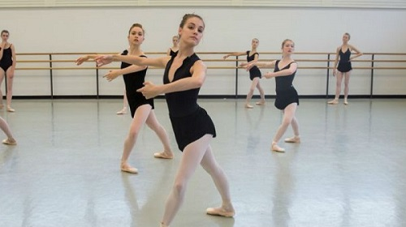
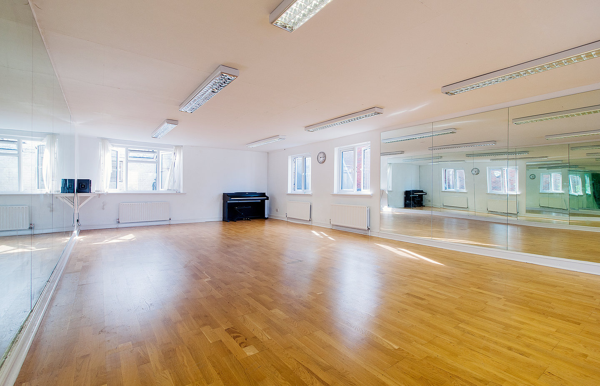
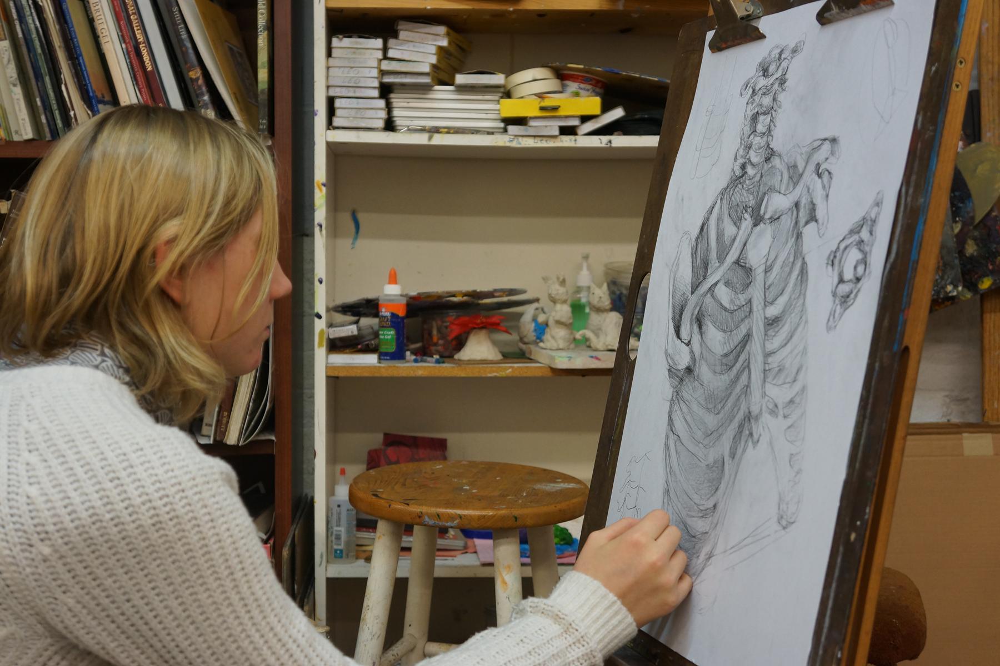
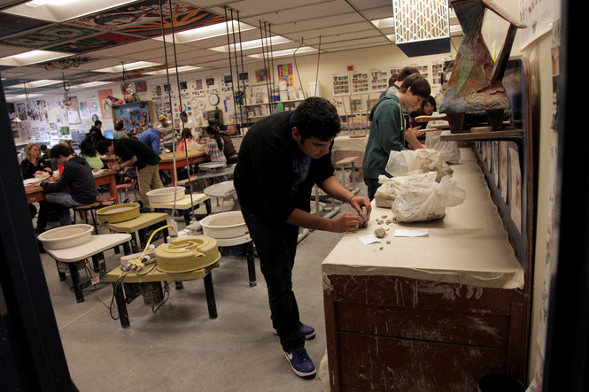
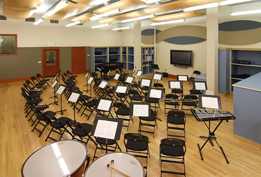
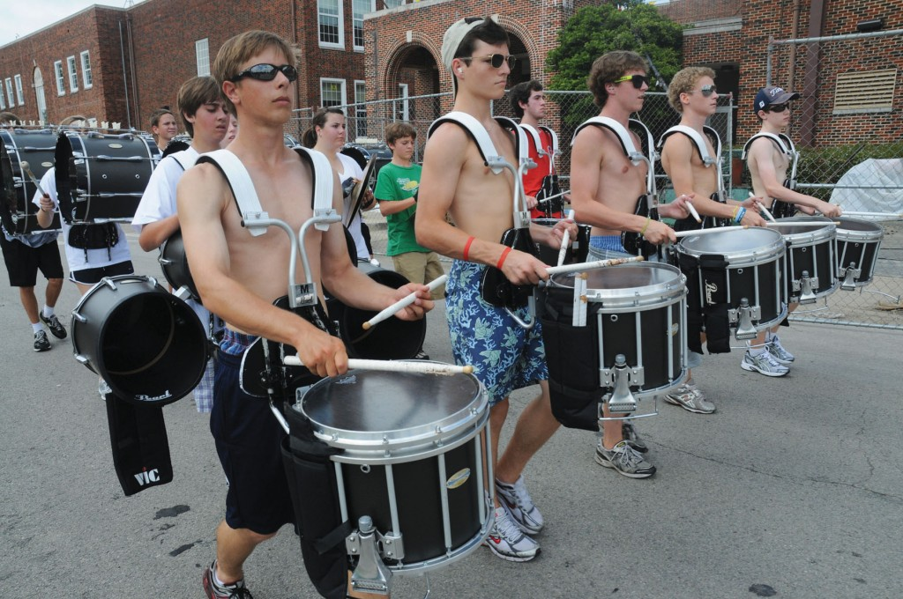
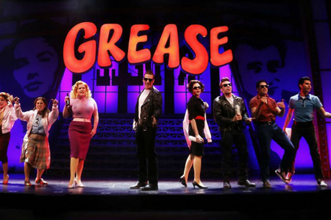
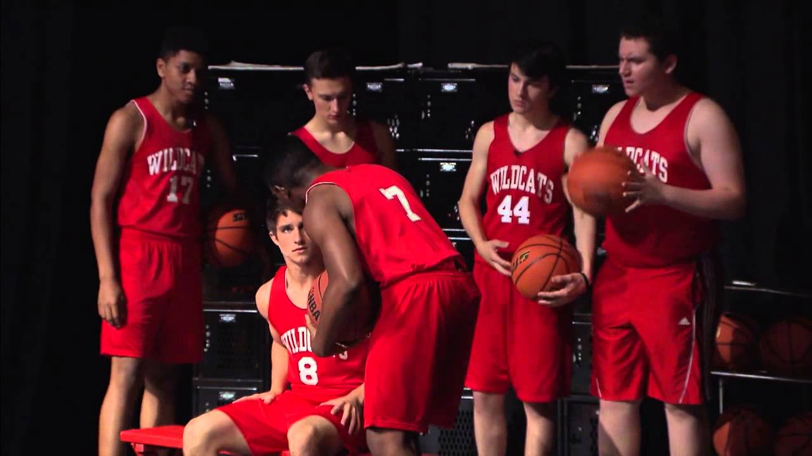
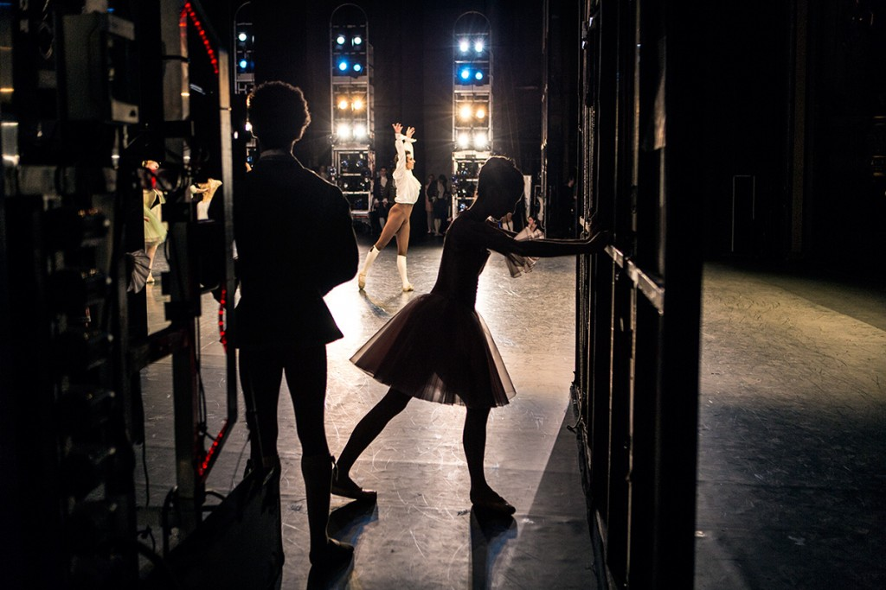
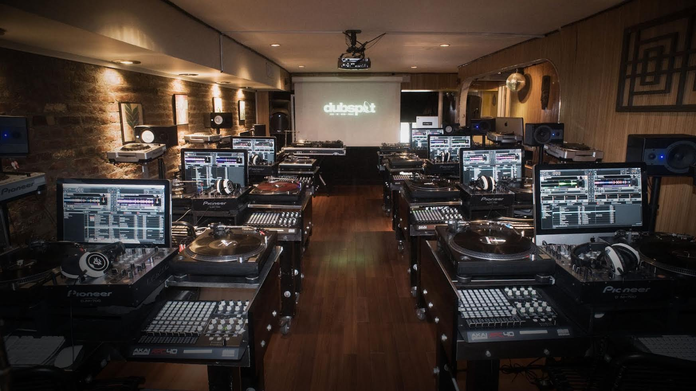

RCSFA provieds opprotunites for students to enroll in regular high school cirriculum, or choose to be part of our fine arts school cirriculum. All courses below belong to our fine arts program, in which a student would take for a whole school year as a full day course, along with electives and four core classes of Math, Science and History


Dance courses at RCSFA are a full day course. Dance students will come at the beginning of the day and work throughout it with all dance courses. Students will be placed with their main dance course by their finals. After their main course, students have three other dance realted courses and/or electives to take for the year.
Main Dance courses (students may only choose 1 for the year)
Ballet
Contemporary and Modern
Hip Hop
Jazz
Art Courses


Along with taking the main art course we provide in levels 1-4 , art major students will also take a class a on art history, and two electives they may pick for the rest of the day
Main Art Styles covered in art course
Paiting(with acrylics and water-color, along with other types of paint)
Drawing and Sketching
Ceramics and Glass work
Crafts
Musical Courses


Students taking musical courses will be provided with instruments, or they may bring their own. Any student in a musical course may take 3 other electives to fill the day
Main Musical Courses
Vocal (singing)
Band-includes all instruments
Acting Courses


Our acting courses provide cirriculum for students that will help broaden their acting skills for musicals and plays. All acting classes are in the theatre, unless stated otherwise. Students in acting courses may only take two other electives
Main Acting courses
Theatre acting-acting course for students in hopes of having a career in plays
Media Acting- acting course for studnets in hopes of acting in TV/movies
Musical Acting-acting course for acting in musicals. Some classes will be in band/vocal room
Production Courses


RCSFA's Production cirriculum is designed for students who wish to know more about production software for music and/or stage prodcution, including movie production.
Production Courses
Backstage theatre production
Music Production
Media production(TV and Movies)